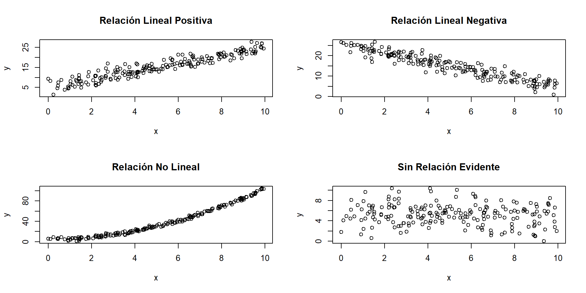
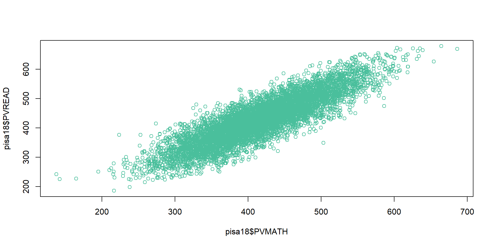
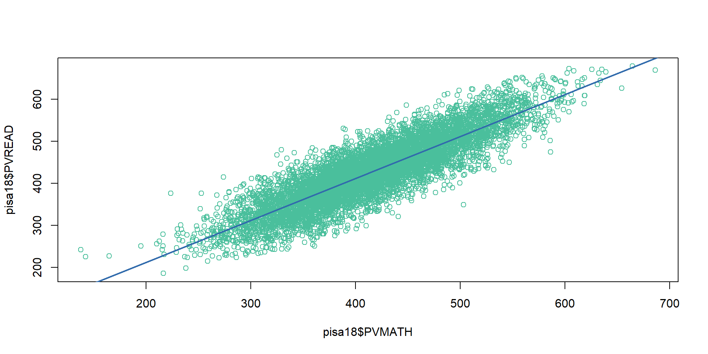
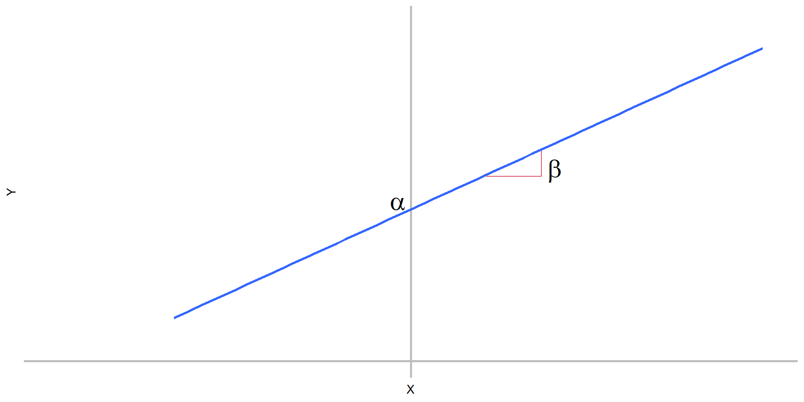
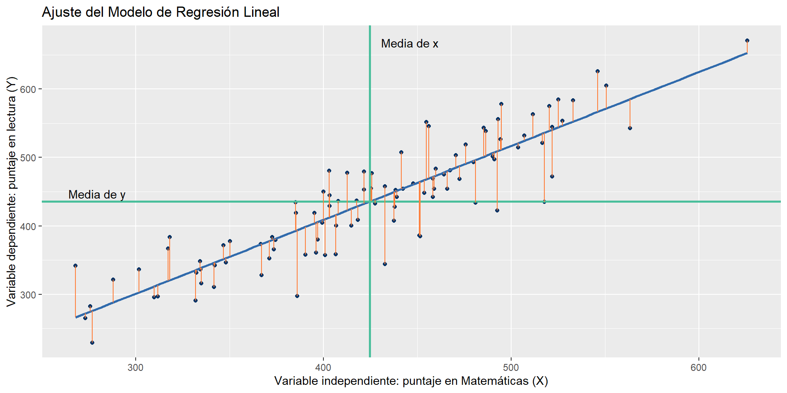
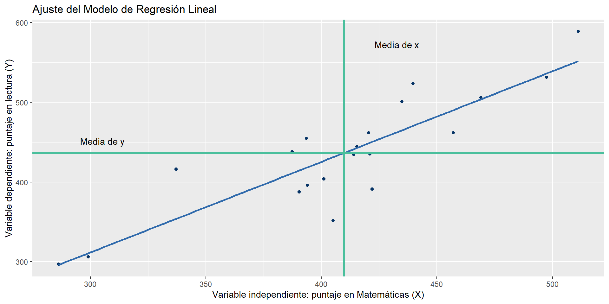
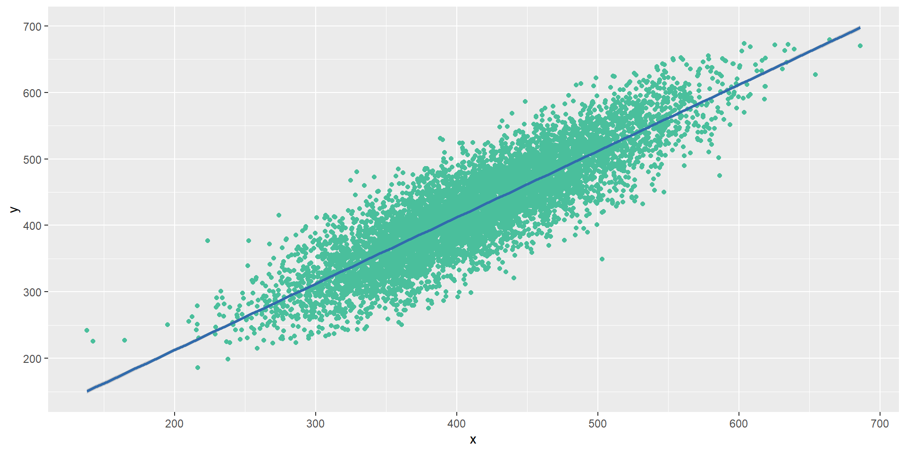
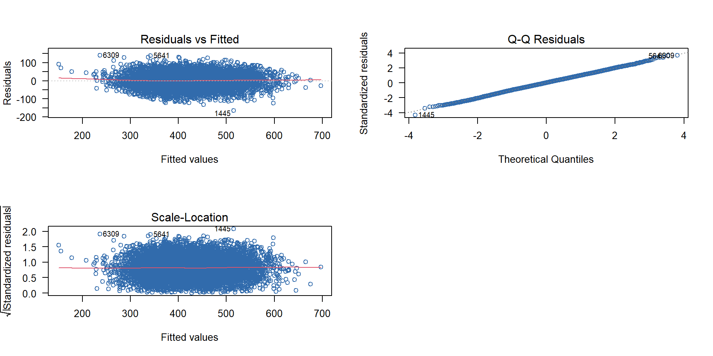

Call:
lm(formula = y ~ x)
Coefficients:
(Intercept) x
12.9487 0.9979 Regresion lineal
CJJM
El Modelo Lineal
Relación entre variables
Qué relaciones podrían existir entre las siguientes variables:
- El salario de un trabajador y su escolaridad formal, años de experiencia laboral, semanas de capacitación y el género.
- El rendimiento de un cultivo y la cantidad de fertilizante utilizado.
- La calidad del vino y su acidez volátil, el contenido de alcohol, su pH, nivel de sulfatos y su tipo (tinto/blanco).
- La altura de un hijo y la altura de sus padres.
- El puntaje del examen de lectura y el puntaje del examen de matemáticas en la prueba PISA 2018.
Relación entre variables
Un diagrama de dispersión permite visualizar el tipo de relación que existe entre dos variables.
Relación entre variables: PISA 2018
El diagrama de dispersión entre los puntajes de los exámenes de matemáticas y lectura de la prueba PISA 2018 para México, muestra una relación estrecha y positiva.
¿Cómo podríamos resumir esta relación?
La línea de regresión
Una línea puede resumir la relación, pero…
¿Qué características debe tener esta línea?
La línea de regresión
Modelo determinista:
\[Y = \alpha + \beta x\]
Es la recta que pasa más cerca de todos los puntos, la recta de mejor ajuste: minimiza la suma de las desviaciones cuadráticas de los valores observados respecto de la recta.
La línea de regresión
Modelo probabilístico simple:
\[Y_i = \alpha + \beta_1x_i + u\] Donde: \(Y_i = \alpha + \beta_1x_i\) es la recta de medias y \(u\) es el error (la distancia entre cada punto y la recta de medias)
Supuestos sobre el error aleatorio \(u\)
- Son independientes uno de otro.
Supuestos sobre el error aleatorio \(u\)
- \(\bar{u} = 0\)
- Se distribuye de manera normal.

Supuestos sobre el error aleatorio \(u\)
- Tienen una varianza común = \(\sigma^2\) (homocedasticidad).
Estimación de la recta
Estimación de la recta
Mínimos cuadrados
Objetivo: disminuir la suma de las desviaciones al cuadrado de los valores observados (\(y_i\)) y los valores pronosticados (\(\hat{y}_i\)).
\[SSE = \sum(y_i-\hat{y}_i)^2 = \sum(y_i - a - bx_i)^2\]
Donde SSE: suma de cuadrados del error
Estimación de la recta
Para estimar la ecuación de la recta de mejor ajuste, utilizamos las siguientes fórmulas:
\[b = \frac{S_{xy}}{S_{xx}}; \quad \text{y,} \quad a = \bar{y} - b\bar{x}\] Donde:
\[S_{xy} = \sum(x_i - \bar{x})(y_i-\bar{y}) = \sum x_iy_i-\frac{(\sum x_i)(\sum y_i)}{n}\] \[S_{xx} = \sum(x_i-\bar{x})^2 = \sum x_i^2 - \frac{(\sum x_i)^2}{n}\]
Análisis de la Varianza
Variación total
El modelo de regresión plantea que la variable \(y\) se relaciona linealmente con \(x\), por tanto, la variabilidad total de \(y\) se define como:
\[SS_{total} = \sum(y_i-\bar{y})^2 = \sum y_i^2 - \frac{(\sum y_i)^2}{n}\]
La variabilidad total se divide en dos componentes:
- SSR (suma de cuadrados para regresión): mide la cantidad de variación explicada por el modelo (por la recta de regresión).
- SSE (suma de cuadrados del error): variación que no explica la variable independiente x (variación residual).
Variación total: componentes
\[SS_{total} = SSR + SSE\]
Análisis de la Varianza
\[SSR = \sum(\hat{y}_i-\bar{y})^2 = \sum(a + bx_i - \bar{x})^2 = \sum(\bar{y}-b\bar{x}+bx_i-\bar{y})\]
\[= b^2\sum(x_i - \bar{x})^2 = \left( \frac{(S_{xy})}{S_{xx}}\right) ^2S_{xx}=\frac{(S_{xy})^2}{S_{xx}}\]
\[SSE = SS_{total}-SSR\] Y el error medio cuadrático esta definido como:
\[MSE = s^2 = \frac{SSE}{n-2}\]
Estimación
R: función lm
Para estimar la regresión lineal en R utilizamos la función:
lm(formula, data, subset, weights, na.action,
method = "qr", model = TRUE, x = FALSE, y = FALSE, qr = TRUE,
singular.ok = TRUE, contrasts = NULL, offset, ...)Los párametros mínimos que utilizaremos son:
formula: es la descripción del modelo que será ajustado, por ejemplo, y ~ x1 + x2.
data: es el dataframe donde se encuentran las variables.
Ejemplo: estimación
Ajustar el modelo \[y = a + b x\]
Donde:
y : puntaje en el examen de lectura
x : puntaje en el examen de matemáticas
Ejemplo: validación
Para poder validar el modelo, debemos recuperar todos los resultados:
Call:
lm(formula = y ~ x)
Residuals:
Min 1Q Median 3Q Max
-165.57 -25.32 0.26 25.68 140.69
Coefficients:
Estimate Std. Error t value Pr(>|t|)
(Intercept) 12.948698 2.742824 4.721 2.39e-06 ***
x 0.997854 0.006511 153.253 < 2e-16 ***
---
Signif. codes: 0 '***' 0.001 '**' 0.01 '*' 0.05 '.' 0.1 ' ' 1
Residual standard error: 38.31 on 7297 degrees of freedom
Multiple R-squared: 0.763, Adjusted R-squared: 0.7629
F-statistic: 2.349e+04 on 1 and 7297 DF, p-value: < 2.2e-16\(\hat{READ} = 12.948698 + 0.997854 MAT\)
- Por cada punto que se incremente el resultado de matemáticas, se espera que el resultado de lectura se incremente 0.9979 puntos.
- Si el resultado de matemáticas = 0, se espera que lectura = 12.9487.
Para rechazar \(H_0: a = 0\), pvalue < al nivel de significancia seleccionado.
Para rechazar \(H_0: b = 0\), pvalue < al nivel de significancia seleccionado.
Ejemplo: visualización
Para visualizar el modelos, podemos generar una gráfica con la librería ggplot2:
Ejemplo: valoración del ajuste
¿Qué tan bien se ajusta la línea de regresión a los datos?
¿Cómo medir la intensidad de la relación entre la variable de respuesta (\(y\)) y la variable explicativa (\(x\))?…
\[\frac{SSR}{SS_{total}} = \frac{(S_{xy})^2}{S_{xx}S_{yy}} = \left( \frac{S_{xy}}{\sqrt{S_{xx}S_{yy}}}\right)^2 = R^2\]
Ejemplo: coeficiente de determinación
Coeficiente de determinación \(R^2\): .
Ejemplo: análisis de residuales
El análisis gráfico de los residuales se obtienen con la siguiente función:
Ejemplo: pronóstico
Uno de los principales usos del modelo de regresión lineal es el pronóstico.
Supongamos que queremos pronosticar el puntaje del examen de lectura de un estudiante que obtuvo 325 puntos en matemática, es decir:
\[E(READ|MAT = 325)\]
Podemos utilizar el resultado del modelo estimado:
\(\hat{READ} = 12.948698 + 0.997854 (325) = 337.251248\)
O la función de R:
Ejemplo: intervalos de confianza
Para estimar el valor promedio de \(y\) cuando \(x = x_0\): \(E(y|x_0)\).
nuevo <- data.frame(x =c(325))
predict(object=modelo1, newdata=nuevo, interval="confidence", level=0.95) fit lwr upr
1 337.2512 335.7989 338.7036Para predecir un valor particular de \(y\) cuando \(x = x_0\): nuevas observaciones.
Modelo de regresión múltiple
Modelo múltiple
\[y = \beta_0 + \beta_1x_1 + \beta_2x_2 + ... + \beta_kx_k + u\]
Donde:
\(y\) es la variable de respuesta que se desea predecir.
\(\beta_0, \beta_1, \beta_2,...,\beta_k\) son constantes desconocidas.
\(x_1, x_2, …, x_k\) son variables predictoras independientes que se miden sin error.
u es el error de variable, que permite que cada respuesta se desvíe del valor promedio de \(y\) en una cantidad \(u\). Se debe suponer que los valores de u:
- son independientes;
- tienen una media de 0 y una varianza común \(s^2\) para cualquier conjunto \(x_1, x_2, …, x_k\), y
- están normalmente distribuidas.
Ejemplo modelo 2
load("datos/pisa18_2.RData")
y <- pisa18_2$PVREAD
x1 <- pisa18_2$PVMATH
x2 <- pisa18_2$ST013Q01TA
modelo2 <- lm(y ~ x1 + x2)
summary(modelo2)
Call:
lm(formula = y ~ x1 + x2)
Residuals:
Min 1Q Median 3Q Max
-161.191 -25.605 0.457 26.306 138.492
Coefficients:
Estimate Std. Error t value Pr(>|t|)
(Intercept) 17.714466 2.917338 6.072 1.33e-09 ***
x1 0.974317 0.007085 137.510 < 2e-16 ***
x2 2.697555 0.435448 6.195 6.19e-10 ***
---
Signif. codes: 0 '***' 0.001 '**' 0.01 '*' 0.05 '.' 0.1 ' ' 1
Residual standard error: 39.06 on 6458 degrees of freedom
(838 observations deleted due to missingness)
Multiple R-squared: 0.7596, Adjusted R-squared: 0.7595
F-statistic: 1.02e+04 on 2 and 6458 DF, p-value: < 2.2e-16Ejemplo modelo 3
y <- pisa18_2$PVREAD
x1 <- pisa18_2$PVMATH
x2 <- pisa18_2$ST013Q01TA
x3 <- pisa18_2$MISCED
modelo3 <- lm(y ~ x1 + x2 + x3)
summary(modelo3)
Call:
lm(formula = y ~ x1 + x2 + x3)
Residuals:
Min 1Q Median 3Q Max
-158.428 -25.284 0.321 26.153 140.108
Coefficients:
Estimate Std. Error t value Pr(>|t|)
(Intercept) 17.105744 2.914901 5.868 4.62e-09 ***
x1 0.963437 0.007215 133.526 < 2e-16 ***
x2 1.978742 0.445175 4.445 8.94e-06 ***
x3 2.019677 0.265436 7.609 3.16e-14 ***
---
Signif. codes: 0 '***' 0.001 '**' 0.01 '*' 0.05 '.' 0.1 ' ' 1
Residual standard error: 38.88 on 6434 degrees of freedom
(861 observations deleted due to missingness)
Multiple R-squared: 0.7612, Adjusted R-squared: 0.7611
F-statistic: 6838 on 3 and 6434 DF, p-value: < 2.2e-16Ejemplo modelo 4
y <- pisa18_2$PVREAD
x1 <- pisa18_2$PVMATH
x2 <- pisa18_2$ST013Q01TA
x3 <- pisa18_2$MISCED
x4 <- pisa18_2$TMINS
modelo4 <- lm(y ~ x1 + x2 + x3 + x4)
summary(modelo4)
Call:
lm(formula = y ~ x1 + x2 + x3 + x4)
Residuals:
Min 1Q Median 3Q Max
-160.231 -25.605 1.335 27.592 128.467
Coefficients:
Estimate Std. Error t value Pr(>|t|)
(Intercept) 24.3541095 5.3580985 4.545 5.74e-06 ***
x1 0.9504084 0.0119177 79.748 < 2e-16 ***
x2 3.5311083 0.7166900 4.927 8.89e-07 ***
x3 2.1136672 0.4420021 4.782 1.83e-06 ***
x4 -0.0002473 0.0014231 -0.174 0.862
---
Signif. codes: 0 '***' 0.001 '**' 0.01 '*' 0.05 '.' 0.1 ' ' 1
Residual standard error: 39.45 on 2545 degrees of freedom
(4749 observations deleted due to missingness)
Multiple R-squared: 0.7536, Adjusted R-squared: 0.7532
F-statistic: 1946 on 4 and 2545 DF, p-value: < 2.2e-16Ejemplo modelo 5
y <- pisa18_2$PVREAD
x1 <- pisa18_2$PVMATH
x2 <- pisa18_2$ST013Q01TA
x3 <- pisa18_2$MISCED
x4 <- pisa18_2$TMINS
modelo5 <- lm(y ~ x2 + x3 + x4)
summary(modelo5)
Call:
lm(formula = y ~ x2 + x3 + x4)
Residuals:
Min 1Q Median 3Q Max
-247.17 -47.55 -1.16 51.60 238.47
Coefficients:
Estimate Std. Error t value Pr(>|t|)
(Intercept) 3.765e+02 5.676e+00 66.323 < 2e-16 ***
x2 1.639e+01 1.306e+00 12.553 < 2e-16 ***
x3 8.517e+00 8.129e-01 10.477 < 2e-16 ***
x4 7.705e-03 2.655e-03 2.902 0.00374 **
---
Signif. codes: 0 '***' 0.001 '**' 0.01 '*' 0.05 '.' 0.1 ' ' 1
Residual standard error: 73.78 on 2546 degrees of freedom
(4749 observations deleted due to missingness)
Multiple R-squared: 0.1378, Adjusted R-squared: 0.1368
F-statistic: 135.6 on 3 and 2546 DF, p-value: < 2.2e-16